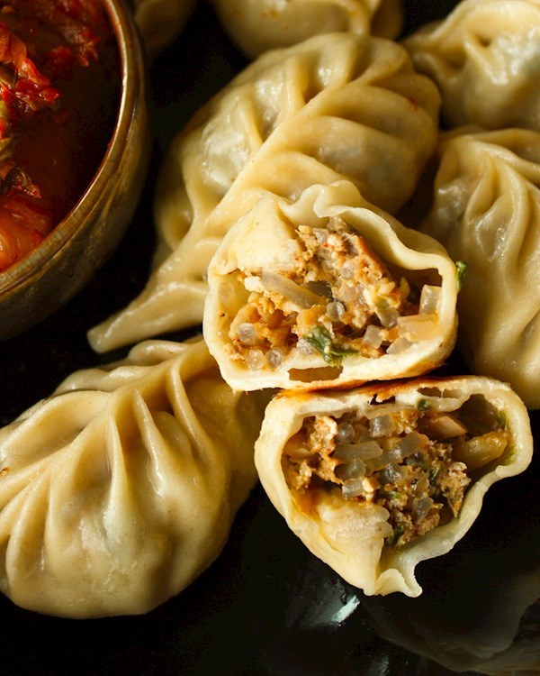

The pan-fried variety of the Chinese jiaozi dumpling, known as guotie, is a Northern Chinese dumpling typically filled with minced pork, Chinese cabbage, scallions, ginger, rice wine, and sesame seed oil. Crunchy and soft textures are achieved by a special method of preparing; while the bottom of the dumpling is frying, a small amount of liquid is added to the pan which is then covered, thus allowing the rest of the dumpling and the filling to steam.
Meal prep time : 45 minutes
Servings : 3